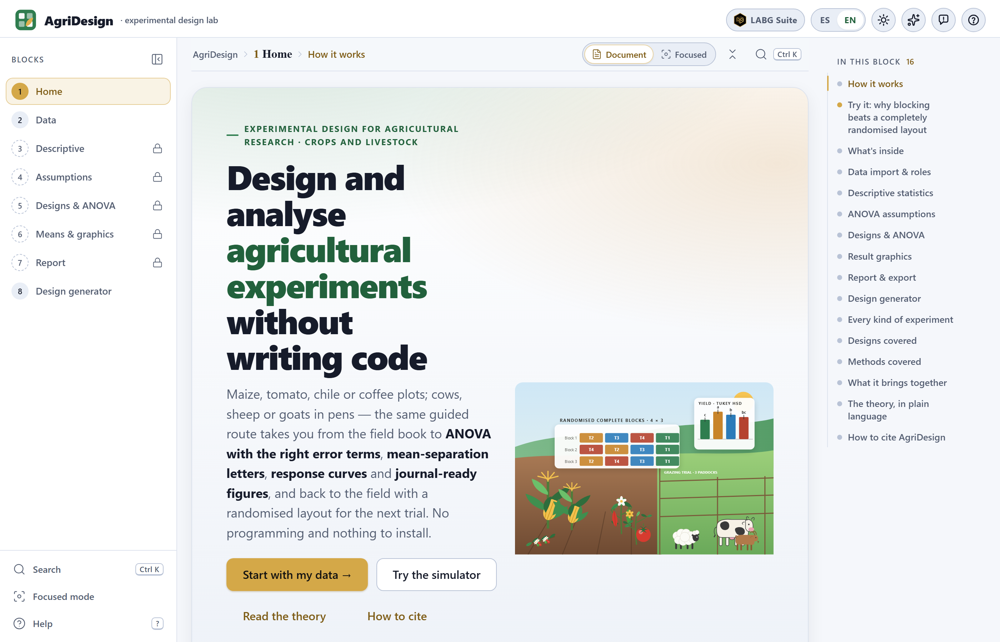
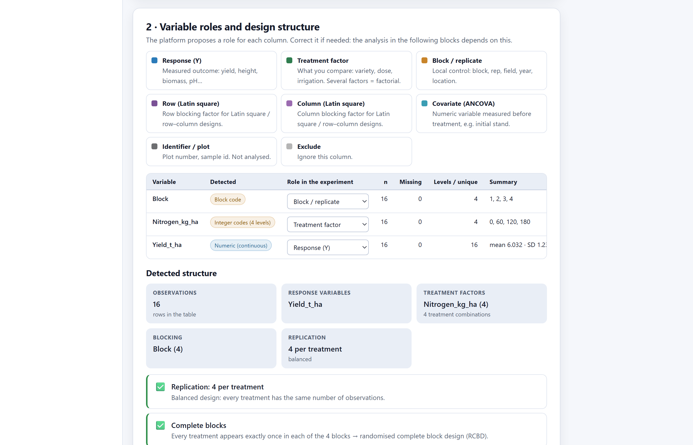
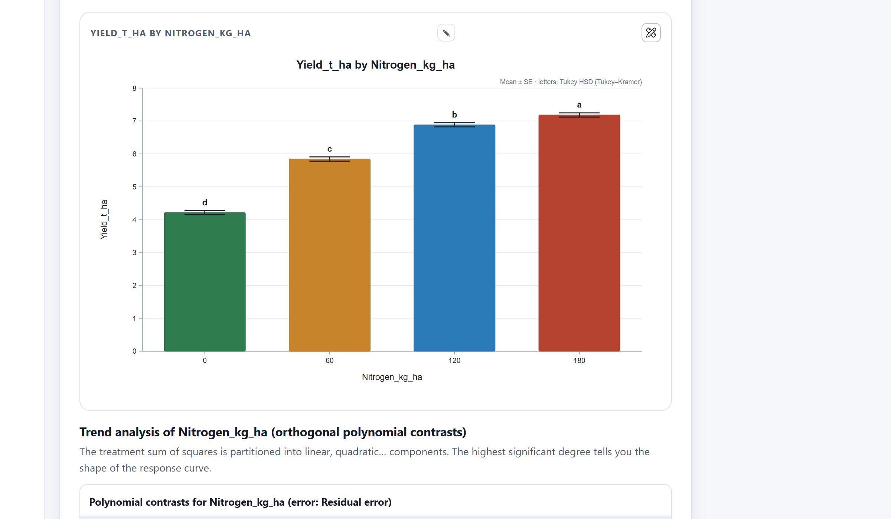
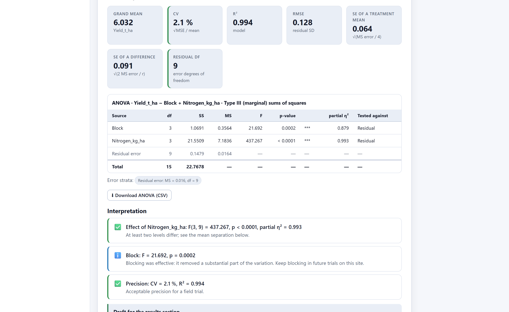

The digital object identifier (DOI) 10.5281/zenodo.22683046 always resolves to the latest version of the software; each version also has its own DOI in the archive record (version 1.0, for example, is 10.5281/zenodo.22683047). Source code: https://github.com/luisangelbg/AgriDesign · online version: https://luisangelbg.github.io/AgriDesign/
AgriDesign runs entirely inside your web browser. The files you open are read on your own computer and are never sent to any server. You can analyse unpublished trials, data from a thesis in progress or results covered by agreements with companies with no risk of them leaving your machine.
The illustrations, diagrams and screenshots in this manual are original and were produced with the software itself or with code written for the manual. The seven example datasets are described in section 1.7; they are teaching trials with values simulated from typical yields, not results of real experiments.
The manual follows the same order as the app: eight numbered blocks, listed in order in the side bar and worked through from first to last. Each chapter explains one block: it opens with a little easily digested theory, describes what the block computes and ends with a step-by-step example using the datasets that come with the software.
The block’s colour appears on the opening page of its chapter, in the section numbers, in the theory boxes and in the contents. That way you can tell at a glance which part of the app you are in.
| Block | Name in the app | What it does |
|---|---|---|
| 1 | Home | Home page, block simulator, essential theory and how to cite |
| 2 | Data | Loading the field book, checking the table and assigning variable roles |
| 3 | Descriptive | Descriptive statistics and exploratory graphics by treatment and block |
| 4 | Assumptions | ANOVA assumptions, transformations and non-parametric alternatives |
| 5 | Designs & ANOVA | Experimental design, analysis of variance, mean comparisons, trends and contrasts |
| 6 | Means & graphics | Gallery of editable, publication-ready figures |
| 7 | Report | Automatic report, PDF and a package with tables and figures |
| 8 | Design generator | Randomisation, field layout, field book and number of replicates |
Clarifications and practical tips that save time.
Points that can change your conclusions if overlooked.
The idea behind an analysis, without unnecessary formulas.
A complete case worked with the datasets included in the software.
| If the value falls in this interval… | then this is the recommended reading. |
These are guides to interpretation, not laws: the crop, the site and the aim of the trial always come first.
| Written like this | Means |
|---|---|
| Run the analysis | A button, checkbox or menu of the app, with its text exactly as it appears on screen. |
| Edit figure›Style & typography | A path: open the first item, then the second. |
rcbd_maize_nitrogen.csv | A file name, column or value, typed exactly as shown. |
| F, P, CV, η²p | Statistics; their meaning is explained the first time they appear. |
| ● ◐ — | Available · partly available or with conditions · not applicable. |
What the software is, which questions it answers, which experiments and data it accepts and how to work through it from start to finish. It also covers the basic ideas of experimental design you need to get the most out of the rest of the manual.
AgriDesign is a platform for designing and analysing agricultural experiments from the field book to the paper: it takes the table with the trial data, checks it, fits the analysis of variance with the correct error terms for the design, separates the means with letters, fits response curves and delivers publication-ready figures and reports. It also works the other way round: starting from a design, it generates the randomisation, the field layout and the field book for the next trial.
Everything happens inside the web browser. There is nothing to install, no programming is required and the data never leave the computer. The same steps serve for plots of maize, wheat or beans, pots of tomato or chilli, coffee trees, pens of cows, sheep or goats, germination boxes and disease severity scales: the route is the same because the logic of experimental design is the same.

1 2 3 4 5 6index.html. Requires neither administrator rights nor an internet connection.| Stage | What you get | Block |
|---|---|---|
| Data input | Reading of spreadsheets (.xlsx, .xls, .ods, .csv, .tsv, .txt) and of the clipboard; a check that the table is in long format; conversion of wide tables. | 2 |
| Roles and structure | Each column is given a role (response, factor, block, row, column, covariate, identifier) and the app works out the design: complete blocks, balance, number of replicates. | 2 |
| Description | Means, standard deviations, coefficient of variation, skewness and outliers by treatment, block or combination; histograms, box plots, violin plots, block profiles and interaction plots. | 3 |
| Assumptions | Normality, homogeneity of variances, additivity and independence, checked on the model residuals; transformations with a Box–Cox profile; a non-parametric route with letters. | 4 |
| Design and ANOVA | Catalogue of designs with their error strata, type I and type III sums of squares, partial η², CV, least-squares adjusted means with their standard errors. | 5 |
| Means and trends | Eleven mean-separation tests with letters, simple effects in factorials, orthogonal polynomials with the fitted curve and its optimum, custom contrasts. | 5 |
| Figures | Editable gallery: means with letters, differences with intervals, response curves, interactions, variance partitioning, field maps; multi-panel compositions; journal styles. | 6 |
| Publication | Complete report with written methods, tables, figures exactly as you edited them and appendices; PDF; ZIP package with data, CSV tables and figures at the chosen resolution. | 7 |
| Planning | Reproducible randomisation with a seed, exportable field layout, field book with empty columns and a calculator for replicates and power. | 8 |
For anyone who runs trials with crops or animals and wants sound results without wrestling with file formats or command lines: undergraduate and graduate students analysing their first experiment, researchers and technicians at experiment stations, breeders evaluating varieties, advisers comparing fertilisers or diets, and teachers who need to show in class why we randomise, why we block and how to read an ANOVA table. Every result comes with a paragraph that interprets it in plain language, which also makes the app a teaching tool.
A good analysis starts with an agronomic question. The following table translates the most frequent questions about a trial into the analysis that answers them and the block where it is found.
| Question | Analysis that answers it | Block |
|---|---|---|
| Is my field book properly set up for analysis? | Check of the long table: one row per experimental unit, one column per variable; detection of empty cells, duplicates and balance. | 2 |
| How much do yields vary within each treatment? Are there odd plots? | Descriptive statistics by treatment and block, coefficient of variation, outliers, box plots and block profiles. | 3 |
| Can I use an ANOVA with these data, or should I transform them? | Tests of normality and homogeneity of variances on the residuals, residual plots, comparison of transformations and Box–Cox profile. | 4 |
| My data are scores from 1 to 9. What should I do? | Non-parametric route: Kruskal–Wallis, Friedman, Scheirer–Ray–Hare or aligned rank transform ANOVA, with their comparisons and letters. | 4 |
| Do the treatments differ? Was blocking worth it? | ANOVA table for the design with its error strata, F and P values for each source, partial η² and CV. | 5 |
| Which treatments differ from each other? | Adjusted means and a mean-separation test (Tukey, LSD, Duncan, Dunnett…) with compact letters. | 5 |
| Does the best variety depend on the fertiliser rate? | Interaction in the factorial, simple effects by slices and comparisons within each level. | 5 |
| What is the optimum nitrogen rate? | Orthogonal polynomials, fitted response curve and optimum point. | 5 |
| Does the initial weight of the animals affect the comparison of diets? | Analysis of covariance: the covariate enters the model and the means are adjusted to its average. | 5 |
| How should I present the results in the paper? | Editable figures at journal resolution, a written methods paragraph and a complete report. | 6 7 |
| How many replicates do I need, and how should I lay out the plots? | Power calculator, randomisation with a seed, field layout and field book. | 8 |
The whole app rests on five ideas. Once they are clear, every block explains itself.
It is the portion of material to which a treatment is assigned at random: the plot, the pot, the pen, the animal or the germination box. Replicates are counted in experimental units, not in measured plants. If a pen of 20 sheep receives a diet, the pen is the replicate and the 20 weights are subsamples; averaging them and analysing a single value per pen is the correct approach. Counting each sheep as a replicate artificially inflates the degrees of freedom and produces “significant” differences that do not exist. Block 2 asks you precisely to identify that unit.
Each treatment is applied to several experimental units. Without replication there is no way to estimate the experimental error, that is, how much two plots that received the same treatment differ, and without that estimate no difference between treatments can be judged. Three replicates is the usual minimum in the field; four or more give the analysis the sensitivity that an expensive trial deserves. Block 8 calculates how many you need to detect the difference that matters to you.
Treatments are allocated to the units by lot, not for convenience or at the researcher’s discretion. This is what guarantees that no unknown cause (a wet strip, the sowing order, the time of measurement) systematically favours one treatment, and what makes the P values valid. Block 8 performs the randomisation with a seed that you can record in order to reproduce it.
When the material is not homogeneous (a sloping field, animals of different ages, several working days), similar units are grouped into blocks and each block receives all the treatments. The variation between blocks is separated out in the ANOVA and no longer gets in the way of the comparisons. Blocking is the most widely used design in agriculture for a reason: the field is almost never uniform. Latin squares block in two directions; split-plot and strip-plot designs accommodate factors that cannot be randomised to small plots, such as irrigation or tillage.
Each observation is decomposed into an overall mean, the treatment effect, the block effect (if there is one) and a residual: y = μ + treatment + block + ε. The residual ε is the experimental error, and the ANOVA compares the variation due to treatments with this background variation through the F ratio. Split-plot designs have more than one error, one for each plot size, and each factor must be tested against its own: this is what the app calls “error strata”, and it handles them automatically in Block 5.
The analysis must reflect how the plots were laid out and randomised. If you sowed in blocks, analyse in blocks; if irrigation was applied to large strips and the varieties to small plots within them, it is a split-plot design even though the table looks like a factorial. AgriDesign suggests the design from the structure of the table, but you confirm which design was actually sown.
The app is built for the trials that are common in agricultural and livestock research. The following table shows the families of experiments and the designs and methods that usually go with them.
| Type of trial | Examples | Usual designs and methods |
|---|---|---|
| Field crops | Maize, wheat, beans, sorghum: plots in blocks along the fertility gradient; yield in t ha⁻¹, plant height, days to flowering. | Randomised blocks, Latin square, lattices |
| Horticulture and greenhouse | Tomato, chilli, cucumber, ornamentals: pots or beds, varieties × nutrition, dose–response curves and optimum rates. | Completely randomised, factorials, polynomial trends |
| Perennial crops | Coffee, cocoa, fruit trees: the tree or the row is the plot; several harvests from the same plants become repeated measures. | Split-plot in time, covariates |
| Livestock | Cows, sheep, goats: the animal or the pen is the experimental unit; initial weight as a covariate; diets, breeds and periods. | Covariance, Latin square, nested |
| Germination and laboratory | Petri dishes, trays and jars: percentages and counts that call for a transformation (arcsine, square root, logit) or a rank test. | Completely randomised, transformations |
| Scores and scales | Disease severity 1–9, vigour 1–5, sensory panels: ordinal responses. | Friedman, Kruskal–Wallis, aligned ranks |
All analyses start from a table in long format: one row per experimental unit (plot, pot, animal) and one column per variable, with factors and blocks as text or code columns and responses as numeric columns. This is the natural shape of a well-kept field book. “Wide” tables, with one treatment per column, are convenient to look at but not to analyse; Block 2 has a converter that reshapes them.
rcbd_maize_nitrogen.csv.NA, - or . are treated as missing data; the design is then no longer balanced, and the app says so.index.html | The app. Open it with a double click. |
Open AgriDesign.bat | Optional launcher with a local server. |
js/, css/ | The program code. |
data/ | The seven example files. |
vendor/ | The spreadsheet reader and its licence. |
manual/ | This manual. |
AgriDesign folder to your computer, for example to Documents. Do not separate index.html from the other folders.index.html. It opens in your default browser on the Block 1 home page.Everything works with a double click. If you prefer to open the app from an address, use Open AgriDesign.bat: it starts a small server on your own computer (address http://localhost:8800) and opens the app from there. Nothing is sent to the internet in this case either. The same app is available online at https://luisangelbg.github.io/AgriDesign/, again without the data ever leaving your machine.
The app stores your figure style preferences in the browser. If you switch browsers or clear your browsing data, those preferences are lost, but your original files are never modified. The results of an analysis live in the page while it is open: download the report or the ZIP package from Block 7 before closing it.
All the analysis blocks share the same organisation, so you only need to learn it once. From top to bottom, each block has three parts:
| Part | What it contains | How it appears on screen |
|---|---|---|
| 0 · What you need to know | A collapsible card with the theory of the block in plain language: what it computes, how to read it and when to be wary. | Card with an italic title at the start of the block |
| 1 · Options | Menus with default values that follow the most common conventions in agronomy, and a button to run the calculation. | 1 · Design and options · Run the analysis |
| 2 · Results | Cards with the main values, downloadable tables, a paragraph of interpretation and editable figures with style and export controls. | Interpretation · Edit figure · Download figure |


1 2 3 4 5 6The app is bilingual: the ES | EN switch in the top bar changes the language of the whole interface, and the button next to it (☾ / ☀) switches between light and dark mode. The choice is remembered for next time. The app opens in Spanish by default; this manual describes the English interface. Since the Spanish manual and many colleagues use the Spanish interface, this table brings together the terms in both languages: it helps you move from one to the other and name the methods correctly when writing.
| In the app | In Spanish | In the app | In Spanish |
|---|---|---|---|
| Response (Y) | Variable de respuesta | Run the analysis | Ejecutar el análisis |
| Treatment factor | Factor de tratamiento | Edit figure | Editar figura |
| Block / replicate | Bloque o repetición | Content & colours | Contenido y colores |
| Covariate | Covariable | Style & typography | Estilo y tipografía |
| Plot · Pen | Parcela · corral | Palette | Paleta de colores |
| Design | Diseño experimental | Error bars | Barras de error |
| Mean-separation test | Prueba de separación de medias | Resolution | Resolución |
| Letters | Letras de significancia | Download | Descargar |
| Random seed | Semilla aleatoria | Report | Informe |
| Continue to … | Continuar a… | How to cite | Cómo citar |
The randomisation in Block 8 and the simulator in Block 1 depend on chance. The Seed fixes that chance: with the same seed and the same design you will obtain exactly the same field layout. Record the seed in the trial protocol so that the allocation of plots can be reproduced; the field book generated by the app includes it.
The software includes seven ready-to-use datasets. They are in the data/ folder and are loaded with one click from Block 2; each is designed for practising a different design. The chapters on each block use them in their step-by-step examples.
| Button in the app | Design | Contents | Blocks to practise |
|---|---|---|---|
| RCBD · maize × nitrogen4 N doses, 4 blocks, yield t/ha | Randomised complete blocks | Four nitrogen rates (0, 60, 120 and 180 kg ha⁻¹) in four blocks; maize yield in t ha⁻¹. The guiding example of this manual: 16 plots, one quantitative factor, a response curve and an optimum rate. | 2 3 4 5 6 7 |
| CRD · bean varieties5 varieties, 4 reps, yield kg/plot | Completely randomised | Five bean varieties with four replicates and no blocks; yield in kg per plot. For comparing varieties with a mean-separation test. | 3 5 |
| Latin square · wheat4 treatments, 4 rows × 4 columns | Latin square | Four treatments in a square of 4 rows × 4 columns; wheat yield. Blocking in two directions. | 2 5 |
| Factorial 3×3 in RCBD · tomatovariety × fertiliser, 3 blocks, 2 responses | Factorial in blocks | Three tomato varieties × three fertiliser levels in three blocks, with two responses: yield per plant and plant height. Interaction and simple effects. | 3 5 6 |
| Split-plot · irrigation × variety2 main plots, 4 sub-plots, 3 blocks | Split-plot | Two irrigation systems on main plots and four varieties on sub-plots, in three blocks. Two error strata. | 5 6 |
| Ordinal scores · fungicides1–9 severity scale, 5 blocks (non-parametric) | Randomised blocks, ordinal response | Four fungicides in five blocks; disease severity on a 1–9 scale. Non-parametric route with Friedman and letters. | 4 |
| Wide table (needs reshaping)treatments as columns — try the converter | Wide table | The maize and nitrogen trial with one rate per column. For practising the wide-to-long table converter. | 2 |
The maize and nitrogen trial runs through the whole manual. In the chapters that follow it will show that the variation between blocks was considerable, that yield responded to nitrogen along a curve that levels off at the high rates, and that the four rates all differ from one another according to Tukey’s test. Figures 1.5 and 1.7 come from this example.
The list of blocks in the side bar marks the natural order. The diagram summarises the route and its two detours: the one that takes the non-parametric route when the assumptions are not met, and the one that starts at Block 8 when the trial has not yet been sown.
Almost everything the app produces comes down to three things: an analysis of variance table, P values and letters next to the means. Understanding them well avoids the most common mistakes: believing that a non-significant result proves there is no effect, believing that a significant one is necessarily important, and reading the letters the wrong way round.

Each row is a source of variation. df are the degrees of freedom (number of levels minus one for a factor; whatever is left over for the error). SS is the sum of squares, the amount of variation attributed to that source, and MS is the same amount per degree of freedom. F is the ratio between the MS of the source and the MS of the error it is tested against (the Tested against column): an F close to 1 says that the treatments vary as much as plots that received the same treatment; a large F, that they vary much more. The P value turns that F into a probability, and the partial η² tells you what fraction of the variation the source explains. In the example, nitrogen has F(3, 9) = 437.27 and P < 0.0001: the rate explains almost all the variation in yield. The blocks also differ (F = 21.69, P = 0.0002): blocking was worth it.
It is the probability of observing an F as large as yours if all the treatments actually had the same mean. P = 0.003 says that such a result would occur 3 times in 1,000 by chance alone. It is not the probability that the hypothesis is true, nor does it measure the size of the effect.
It is the square root of the error mean square divided by the grand mean, as a percentage. It measures the precision of the trial: how alike the plots with the same treatment were. In the example it is 2.1%, which is very low; for field yields, values of 10–20% are normal and values above 30% indicate an imprecise trial.
| P value | Evidence against equal means | How to write it |
|---|---|---|
| P < 0.001 | Very strong | “The treatment effect was highly significant.” |
| 0.001 ≤ P < 0.01 | Strong | “The effect was significant.” |
| 0.01 ≤ P < 0.05 | Moderate | “There was evidence of differences”; it is worth confirming in another season or location. |
| P ≥ 0.05 | Insufficient | “No differences were detected.” Do not claim that the treatments are equal: there may not have been enough replicates. |
Always report the exact P value, the F with its degrees of freedom and the effect size (the means with their standard errors, or η²), not just whether the result is significant.
After a significant F, the mean-separation test compares the treatments in pairs and summarises the result with letters: two means that share at least one letter do not differ at the chosen level; two that share none do differ. The letter a goes to the largest mean. Thus, in “7.18 a, 6.89 b, 5.85 c, 4.22 d” the four rates all differ from one another; in “7.18 a, 6.89 ab, 5.85 b” the first and the third differ, but the middle one cannot be distinguished from either. The letters do not rank by “quality”: they only say which differences passed the test.
In a very precise trial, tiny differences turn out significant. That the 180 rate outyields the 120 rate with P < 0.05 does not mean it pays to apply it: 0.30 t ha⁻¹ more yield may not cover the cost of the extra 60 kg of nitrogen. Always ask yourself whether the size of the difference matters to the grower and to the aim of the trial, not only whether the P value is small. The response curve and its optimum, in Block 5, are designed precisely for that question.
With these foundations you are ready to work through the blocks. The next chapter presents the app’s home page, its built-in theory and the simulator, a quick way to see in action why blocking improves a trial, the idea behind figure 1.2.